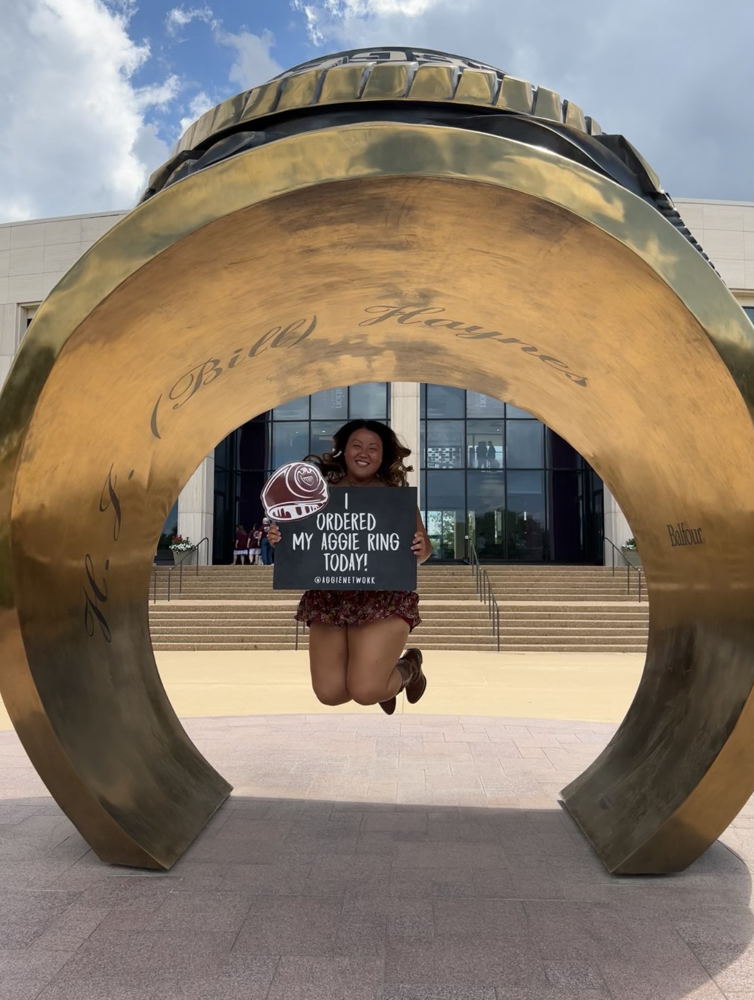

 Howdy everyone! My name is Kayla Berlanga and I am so happy to be in my third year of college at Texas A&M University. Gig'em! I am a proud Texas Aggie majoring in Technology Management and double minoring in Business and Cybersecurity. I was born in Anhui, China, but raised in San Antonio, Texas with my adopted family. My mom has been one of the most supportive people I have had during my college experience and even though she is a Longhorn graduate, she is still awesome. I graduated in 2019 from Providence Catholic High School and was involved in many honor societies and organizations. I attended Texas State University and participated in their Honors College during my freshman year. Due to family circumstances, I came back home to San Antonio and attended the University of Texas at San Antonio for a year. Although both universities were great, a part of me still wanted to attend Texas A&M and I am beyond grateful to be here. I am so honored to be part of the graduating class of 2023 and to seize all the opportunities A&M has to offer. After receiving my degree, I hope to work for a major corporation such as Amazon or USAA. I hope my website has given you a better insight as to who I am and if you have any further questions about myself, or Texas A&M University just ask.